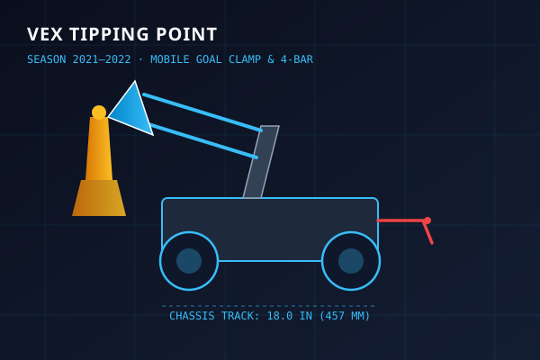

Mobile Goal Control & Elevated Platform Scoring
In VEX Tipping Point, alliances competed to secure 7 field mobile goals (weighing up to 1.5 kg each). Matches were decided by possessing goals and balancing them alongside alliance robots on an elevated central seesaw platform during the final 30 seconds.
Key engineering objectives centered on instant goal latching, simultaneous multi-goal retention, and low-power platform balancing stability.
MECHANISM SPECIFICATIONS
- Front Lift: 4-bar linkage geometry powered by dual 11W V5 motors with rubber-band counterbalancing.
- Rear Mogo Clamp: Fast-action pneumatic toggle clamp retaining alliance goals during field traversal.
- Ring Scorer: Compliant urethane intake rollers feeding rings onto goal branches.
- Drivetrain: 4-motor 200 RPM direct-drive chassis on 4" omni-directional wheels.
Design Evolution: V1 Motorized Prototype vs V2 Nationals Pneumatic Rebuild
Hardware accessibility and match stress testing drove a fundamental mid-season overhaul from an early motorized clamping system to pneumatic toggle actuation prior to the National Championship.
Built without pneumatic cylinders due to early supply constraints. The system relied on dedicated electric gearmotors powering a mechanical lead-screw clamp for the rear mobile goal and a direct-drive front 4-bar lift.

- Motor Budget Contention: 2 dedicated motors used for clamping strained the strict 8-motor allowance, limiting lift torque and drivetrain pushing power.
- Thermal Throttling: Sustained motor current required to keep goals clamped under heavy pushing defense caused motor thermal cutouts during elimination rounds.
- Slow Latch Speed: Motorized lead screw required ~1.8s to fully clamp, losing contested goal rushes to faster competitors.
- Clamp Actuation: 11W V5 motor + lead-screw mechanism.
- Clamping Time: 1.8 seconds.
- Lift Architecture: Direct-geared 4-bar without elastic assist.
- Drivetrain: 4-Motor 200 RPM direct drive.
Completely stripped the chassis down and rebuilt the robot. Integrated dual single-acting pneumatic cylinders paired with over-center toggle locks, shifting all freed motor power into a reinforced, rubber-band assisted 4-bar lift.

- Instant Pneumatic Toggle Clamp: Dual single-acting cylinders mechanically lock over-center, resisting 120 N pulling force with zero electrical current draw.
- Elastic Counterbalance Lift: Tuned rubber-band cantilevers on front 4-bar arm, reducing lift motor stall current by 54% and accelerating elevation speed.
- Optimized Drivetrain Traction: Rebalanced mass distribution for 100% stable seesaw platform climbing.
- Latch Speed: 1.8s → < 0.15s instant pneumatic grab.
- Clamp Power Draw: Reduced from sustained stall amps to 0 W.
- Lift Capacity: Smoothly elevated 2 fully loaded mobile goals.
- Outcome: Qualified for the VEX World Championships in Dallas, Texas.
Tournament Performance & Engineering Growth
Foundational Leadership
Founded the team at secondary school and sixth form, securing over £10,000 in funding to finance hardware, tools, and international travel. This season established core prototyping workflows, mechanical testing rigs, and design notebooks that led to 22 total regional/national awards and World Championships qualification.